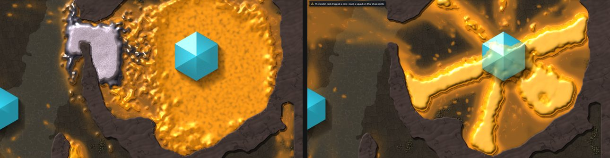
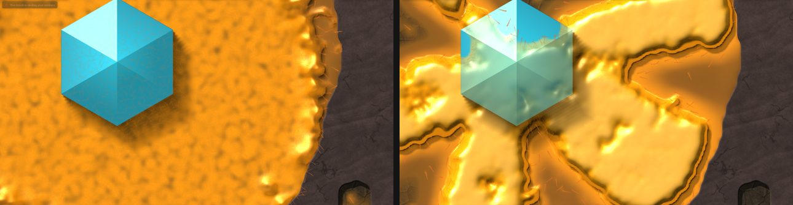
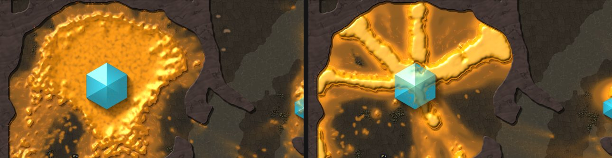
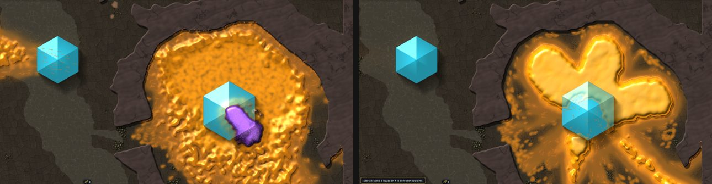
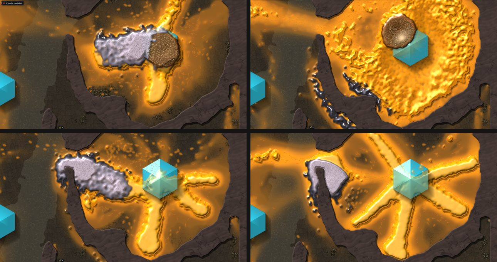
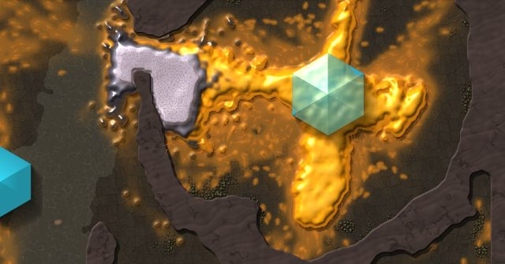

<title>Sprawler Threads</title>
<meta name="claude:viewport-fit-sides" content="cover">
<link rel="stylesheet" href="https://fonts.googleapis.com/css2?family=Space+Grotesk:wght@500;700&family=Inter:wght@400;600&family=JetBrains+Mono:wght@400&display=swap">
<style>
/* Layout: one reading column; each picture full width with its counts beside it in a small table. */
:root {
  --bg: #f6f3ec; --fg: #23211c; --muted: #6b665a; --line: #ddd6c6; --slime: #b86a00; --panel: #fffdf8;
  --display: "Space Grotesk", "Segoe UI", system-ui, sans-serif;
  --body: "Inter", "Segoe UI", system-ui, sans-serif;
  --mono: "JetBrains Mono", ui-monospace, monospace;
}
@media (prefers-color-scheme: dark) { :root:not([data-theme="light"]) { --bg: #17150f; --fg: #ece6d8; --muted: #a59d8b; --line: #3a352a; --slime: #f0a326; --panel: #1f1c15; color-scheme: dark } }
:root[data-theme="dark"] { --bg: #17150f; --fg: #ece6d8; --muted: #a59d8b; --line: #3a352a; --slime: #f0a326; --panel: #1f1c15; color-scheme: dark }
body { background: var(--bg); color: var(--fg); font: 15px/1.55 var(--body); }
main { max-width: 1320px; margin: 0 auto; padding-block: 28px 60px; padding-left: max(16px, env(safe-area-inset-left, 0px)); padding-right: max(16px, env(safe-area-inset-right, 0px)); display: grid; gap: 34px; }
h1, h2 { font-family: var(--display); text-wrap: balance; margin: 0; }
h1 { font-size: 2rem; }
h2 { font-size: 1.25rem; }
p { margin: 0; max-width: 68ch; }
.lede { display: grid; gap: 10px; }
.eyebrow { font: 12px var(--mono); letter-spacing: .06em; text-transform: uppercase; color: var(--slime); }
section { display: grid; gap: 12px; }
figure { margin: 0; display: grid; gap: 8px; }
figure img, figure video { width: 100%; max-width: 100%; height: auto; border-radius: 6px; background: #000; }
.pair-labels { display: grid; grid-template-columns: 1fr 1fr; font: 12px var(--mono); color: var(--muted); }
figcaption { color: var(--muted); font-size: 13px; max-width: 90ch; }
.tablewrap { overflow-x: auto; }
table { border-collapse: collapse; font-variant-numeric: tabular-nums; font-size: 13px; }
th, td { text-align: right; padding: 4px 12px; border-bottom: 1px solid var(--line); white-space: nowrap; }
th:first-child, td:first-child, th:nth-child(2), td:nth-child(2) { text-align: left; }
th { font-weight: 600; color: var(--muted); }
tr.on td { color: var(--slime); }
.rec { background: var(--panel); border: 1px solid var(--line); border-radius: 8px; padding: 16px 18px; display: grid; gap: 8px; }
code { font: 13px var(--mono); }
ul { margin: 0; padding-left: 20px; max-width: 80ch; }
</style>

<main>
  <div class="lede">
    <div class="eyebrow">Lab prototype · planet 2, the Sprawler · not in the game</div>
    <h1>The Sprawler's body as threads</h1>
    <p>Off, the Sprawler's body round a crystal is a solid disc, one walker a fine cell. With two rules together the same number of walkers forms spokes from the crystal with bare ground between: <b>lanes</b> (a calm walker may step into a full cell holding as much trail as its own, up to 3 more there) and a <b>shuttle</b> (a walker near its birth energy walks down the crystals' scent, and back up it when hungry). Trail kept 0.92 and sensors 6 cells out for the Sprawler. Left is off, right is threads, in every picture.</p>
  </div>

  <section>
    <h2>Seed 1, 1:40 to 3:00, zoom 6</h2>
    <figure>
      <video src="seed1-clip.mp4" controls muted loop playsinline autoplay></video>
      <div class="pair-labels"><span>off</span><span>threads</span></div>
      <figcaption>Planet 2, run seed 1, lavapipe. Squad holding in the far corner (8 soldiers, alive in both). A frame every 2 game seconds. The arms reach and swing as the traffic shifts; the brown patch at about 2:20 is the planet's fruiting body.</figcaption>
    </figure>
  </section>

  <section>
    <h2>Seed 1 at 3:00</h2>
    <figure>
      
      <div class="pair-labels"><span>off · zoom 6</span><span>threads · zoom 6</span></div>
    </figure>
    <figure>
      
      <div class="pair-labels"><span>off · zoom 12</span><span>threads · zoom 12</span></div>
      <figcaption>At zoom 12 the arms are pale gold (cells holding 2 to 4 walkers take the thick colour) with lit rims. The orange between them is the trail's veil over bare ground, so holes glow rather than go dark: a call for Look.</figcaption>
    </figure>
  </section>

  <section>
    <h2>Seeds 2 and 3, zoom 6</h2>
    <figure>
      
      <div class="pair-labels"><span>off · seed 2, 1:29</span><span>threads · seed 2, 1:29</span></div>
    </figure>
    <figure>
      
      <div class="pair-labels"><span>off · seed 3, 1:49</span><span>threads · seed 3, 1:49</span></div>
      <figcaption>The squad held where it landed and was wiped at about 1:40 and 2:00 in both arms, so these are just before.</figcaption>
    </figure>
  </section>

  <section>
    <h2>The counts</h2>
    <p>In the camera's frame: the body's outline (cells where 5 of the 3x3 hold walkers, gaps up to about 40 cells closed over), the share of it with a walker, the share that is hole (no walker in its 3x3), and over the whole slime the walkers in cells holding two or more.</p>
    <div class="tablewrap">
      <table>
        <thead><tr><th>Seed, time</th><th>Arm</th><th>Walkers</th><th>Outline</th><th>With a walker</th><th>Holes</th><th>Stacked</th></tr></thead>
        <tbody>
          <tr><td>1, 2:50</td><td>off</td><td>20,402</td><td>14,193</td><td>74.1%</td><td>4.2%</td><td>16.4%</td></tr>
          <tr class="on"><td>1, 2:50</td><td>threads</td><td>19,998</td><td>12,178</td><td>38.1%</td><td>29.2%</td><td>69.9%</td></tr>
          <tr><td>2, 1:29</td><td>off</td><td>13,932</td><td>9,877</td><td>69.3%</td><td>8.2%</td><td>1.0%</td></tr>
          <tr class="on"><td>2, 1:29</td><td>threads</td><td>13,923</td><td>7,298</td><td>46.8%</td><td>24.7%</td><td>77.4%</td></tr>
          <tr><td>3, 1:49</td><td>off</td><td>20,403</td><td>7,564</td><td>77.8%</td><td>0.2%</td><td>3.7%</td></tr>
          <tr class="on"><td>3, 1:49</td><td>threads</td><td>19,791</td><td>6,591</td><td>44.5%</td><td>27.2%</td><td>84.3%</td></tr>
        </tbody>
      </table>
    </div>
    <p>Walkers: on seed 1 within 5% of off in 158 of 179 seconds; the misses follow off's fruiting burst at 2:21 (2,528 walkers sown at once). Kills by 3:00: 8,659 threads, 7,999 off. Frame cost on lavapipe: <code>sense</code> 3.07 to 4.03 ms a step, every pass 25.3 to 29.2 ms (lavapipe is for checking, not timing).</p>
  </section>

  <section>
    <h2>Each part alone</h2>
    <figure>
      
      <figcaption>Top left: lanes alone, count held (a dense lump and one cord). Top right: the shuttle alone (still a packed disc). Bottom left: both, 2:00, idle squad. Bottom right: both with the trail kept 0.95, 2:30 (six clean spokes; by 2:50 a fruiting lump had gathered most of them).</figcaption>
    </figure>
    <figure>
      
      <figcaption>Both rules with the Sprawler's own trail (0.8) and sensors (18), 2:30: two rough arms, a cross.</figcaption>
    </figure>
  </section>

  <section class="rec">
    <div class="eyebrow">Recommendation</div>
    <p><b>Build it for the Sprawler, changed.</b> Lanes 3 at 1.0 and the shuttle at 3 past 0.9 of the birth energy, the Sprawler only, trail 0.92, sensors 6; Enemy retunes by play. Before it lands:</p>
    <ul>
      <li>Look judges the trail's veil inside the body, which fills the holes with orange.</li>
      <li>Enemy checks the ceiling's crystal cover, since fed walkers leave the crystal's middle bare at times.</li>
      <li>The spokes leave lanes of bare ground into the body, so a squad can walk between the arms toward the crystal. Untested with a playing hand.</li>
    </ul>
    <p>Report: <code>Reports/lab-threads-2026-11-24/README.md</code>. Code on the lab branch only, <code>283617eb</code>.</p>
  </section>
</main>
